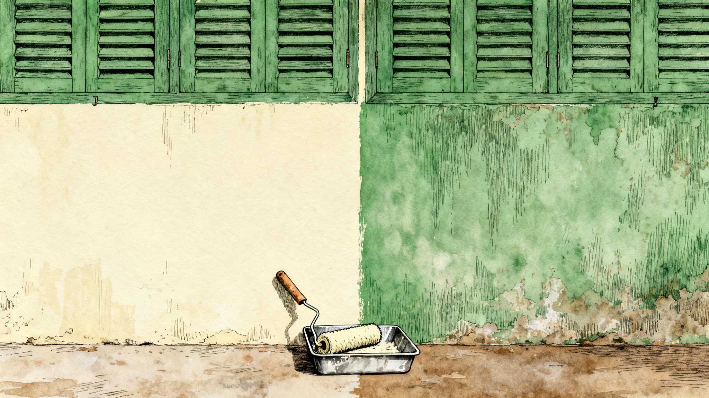
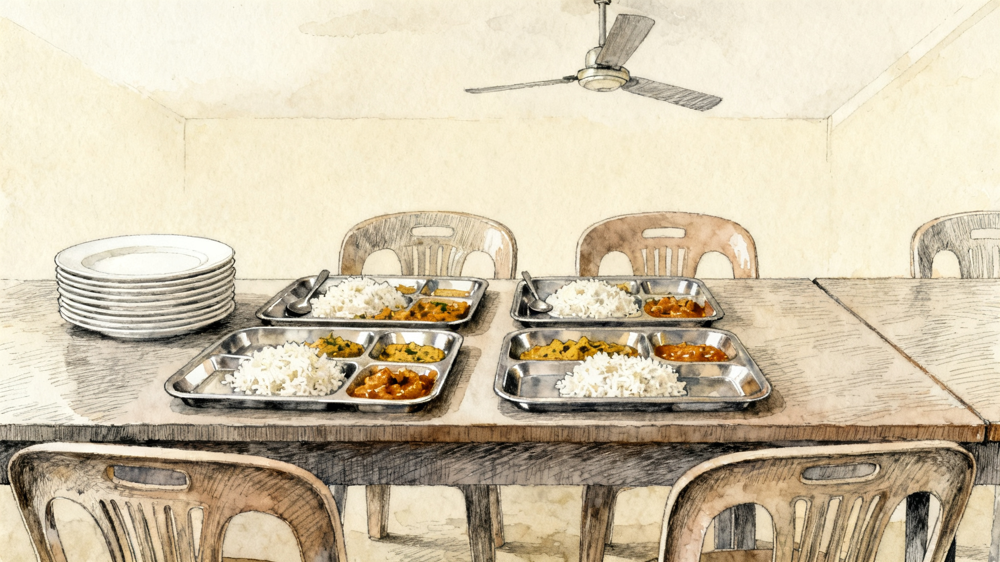
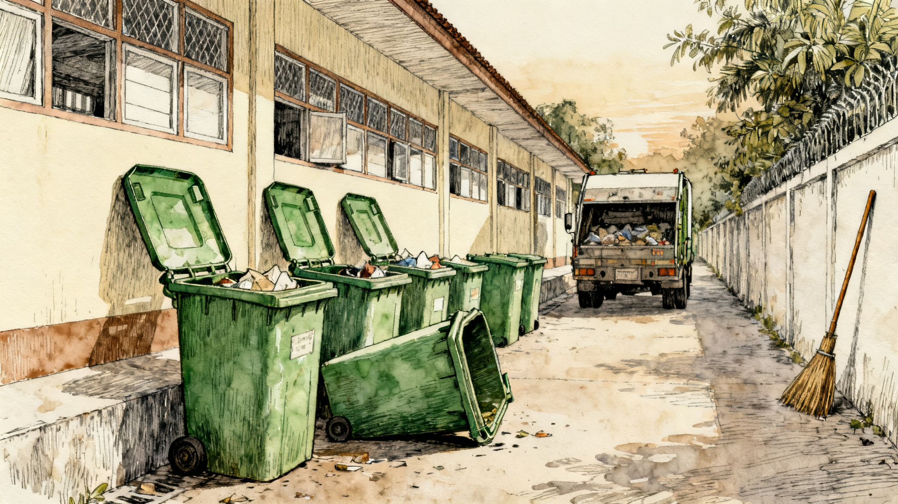

We use the passive when who or what does an action is not known or not important.
Somebody threw a stone at the window. Nobody saw who.
The window was broken.
A handy trick to hide responsibility
We use the passive when who or what does an action is not known or not important.
Somebody threw a stone at the window. Nobody saw who.
The window was broken.
Test 1 · sentence 1 of 5
All our sandwiches are served with salad.
Who serves them? The waiters — and that is not important.
Test 1 · sentence 2 of 5
The party was arrived at by the guests.
Arrive has no object, so there is no passive in it. Say: The guests arrived at the party.
Test 1 · sentence 3 of 5
The cake was eaten by me.
You know who ate it. It was you — so there is nothing to hide. Say: I ate the cake.
Test 1 · sentence 4 of 5
Have these tomatoes been washed?
Nobody knows who washed them, and it does not matter.
Test 1 · sentence 5 of 5
The window was broken by somebody.
“Somebody” is not a name. Name them, or drop the phrase: The window was broken.
active
passive
The receiver is the subject now. The doer goes to the end — or disappears.
tense
the passive
present
Not many fresh products are grown in my region.
past
This market was built over 100 years ago.
present perfect
All the tables have been cleaned.
future
All these bags will be thrown away.
modal
These berries can be eaten raw.
The past participle carries the meaning. Be carries the tense.
Test 2 · sentence 1 of 5
The window was broke by the storm.
The participle is broken, not broke.
The window was broken by the storm.
Test 2 · sentence 2 of 5
These songs are played every morning.
are + played — and the doer is not important.
Test 2 · sentence 3 of 5
The thief caught by the police last night.
No be at all — every passive needs it.
The thief was caught by the police last night.
Test 2 · sentence 4 of 5
My bike has been repaired by my uncle.
has been + repaired — and the doer is new information, so by stays.
Test 2 · sentence 5 of 5
The floor was being clean when I came in.
After being you still need the participle.
The floor was being cleaned when I came in.
Exercise 1 · page 117
Strawberries are grown here.
The menu is being planned right now.
The cookies haven’t been baked yet.
Was all the trash taken away?
The cupboards hadn’t been cleaned.
Exercise 1 · page 117
Has salt been added to this soup?
The fridge was being repaired when I arrived.
Junk food shouldn’t be advertised.
All the grapes used to be picked by hand.
Will these bags be used again?
Exercise 2 · page 117
What can be done (can / do) with the huge amount of food that is wasted (waste) every day? Here are two solutions.
Shaanxi Yihong Agricultural Technology Company was set up by (set up) 23-year-old Qinyu Zhang in 2014. Zhang grew up in Shaanxi, an area of China where a lot of apples are grown (grow). He was shocked to see how much fruit was thrown away by (throw away) farmers.
Thanks to Zhang, since 2014, thousands of tons of fruit from Shaanxi have been sold (sell) directly to people who want it instead of being wasted.
Exercise 2 · page 117
What happens to the food in the supermarket that nobody buys? Last year 7,360 tons of unwanted food from stores and cafés were given away to (give away) FareShare, an independent charity in the U.K.
The food is collected by (collect) volunteers who then share (share) it among 2,020 charities across the country.
Without FareShare, thousands of tons of good food would be wasted (would / waste). Instead, it goes to people who really need it.
One sentence about each picture.
Past simple passive.
Picture 1
shatter
past simple passive

Picture 2
coat
past simple passive

Picture 3
portion
past simple passive

Picture 4
haul
past simple passive
Picture 5
pluck
past simple passive
Suggested answer · picture 1
The classroom window was shattered by a formidable hunk of rock, and the splinters were left scattered across the sill.
Suggested answer · picture 2
The tired wall was coated in fresh cream paint, and the roller was abandoned in its tray at the foot of it.
Suggested answer · picture 3
The rice and curry were portioned into four steel trays and left waiting on the canteen table, with a stack of clean plates beside them.
Suggested answer · picture 4
The rubbish was hauled away before the lane was properly awake, and the empty bins were left standing in a row.
Suggested answer · picture 5
The ripe mangoes were plucked by hand and gathered into a bamboo basket, and one of them was cut open on the grass.
If we have time.
before
Mali broke the window in the science lab.
after
The window in the science lab was broken.
hidden
Mali
One sentence about today — with nobody in it.
For example: The window was broken at break time.
Say it at the door.